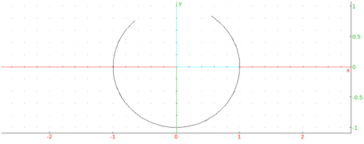
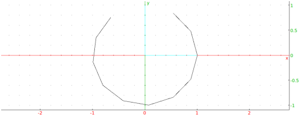

Input:
plotparam(sin(t)+i*cos(t),t=-4..1)
or:
plotparam(sin(x)+i*cos(x),x=-4..1)
or (with t-=4,t+=1 in the graphic configuration):
plotparam(sin(t)+i*cos(t))
Output:

Input:
plotparam(sin(t)+i*cos(t),t=-4..1,tstep=0.5)
or (with t-=4,t+=1 in the graphic configuration):
plotparam(sin(t)+i*cos(t),t,tstep=0.5)
Output:
